Groupe d’entreprises
Groupe Mosquera Aulestia
Conseil récurrent pour un groupe de sociétés de logistique et de commerce extérieur.
Découvrir le casCabinet juridique pour entreprises · Quito · Équateur
Nous conseillons les entreprises équatoriennes et étrangères en droit des sociétés, protection des données et implantation et activité en Équateur, avec un appui juridique, comptable et technologique.
Réponse le jour même
Chiffres mis à jour en octobre 2026
entreprises et organisations conseillées
mises en œuvre de la LOPDP
mandats de DPD en cours
entreprises étrangères constituées
Services juridiques, comptables et de conformité pour créer, exploiter et développer votre entreprise en Équateur.
Ver casos de éxito →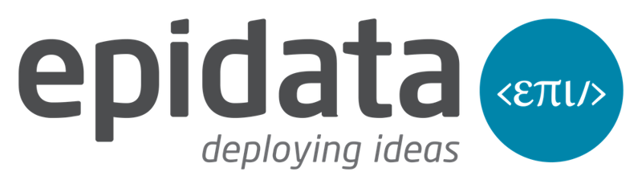
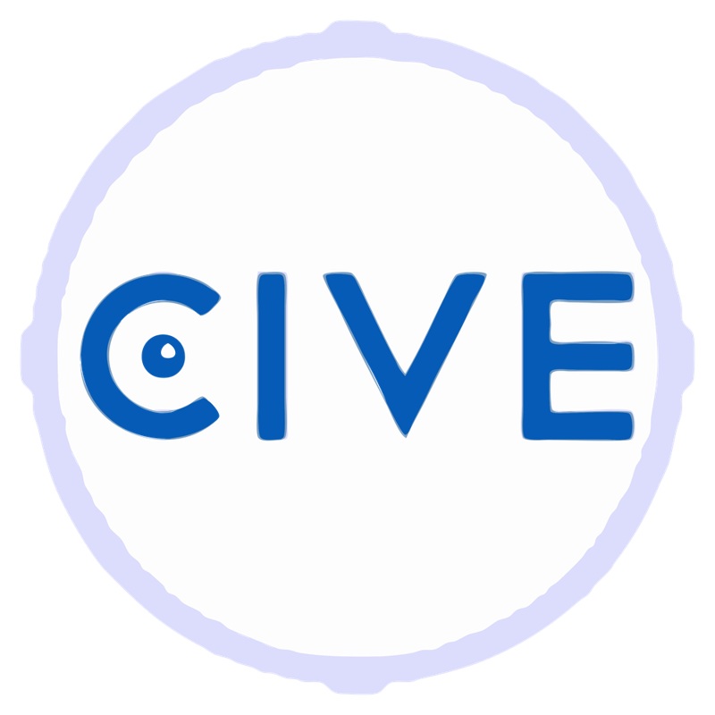
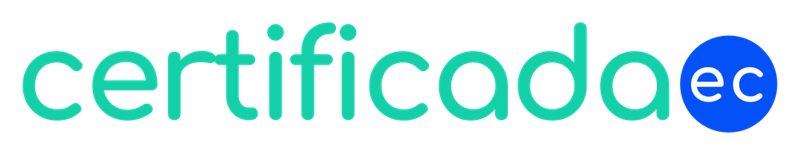
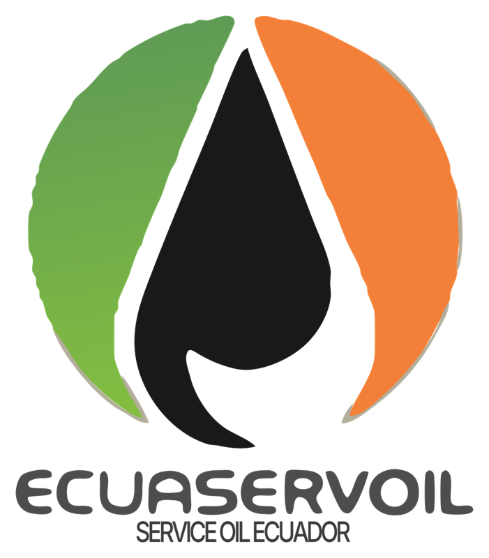
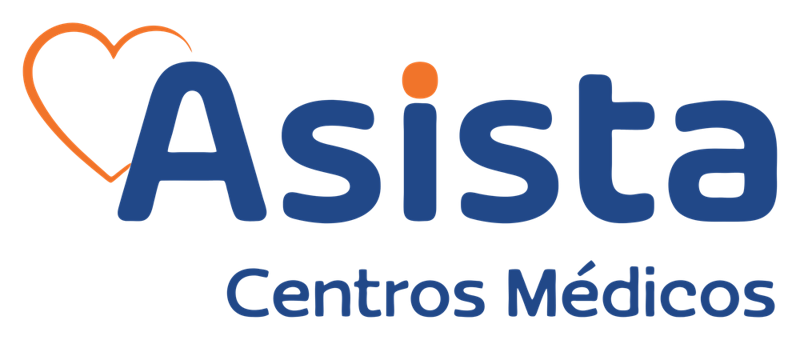
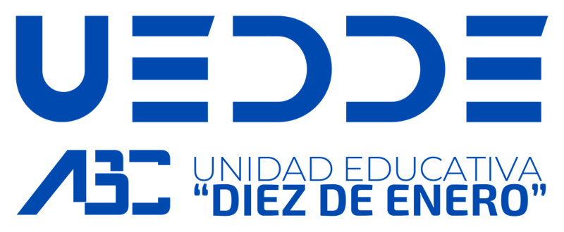
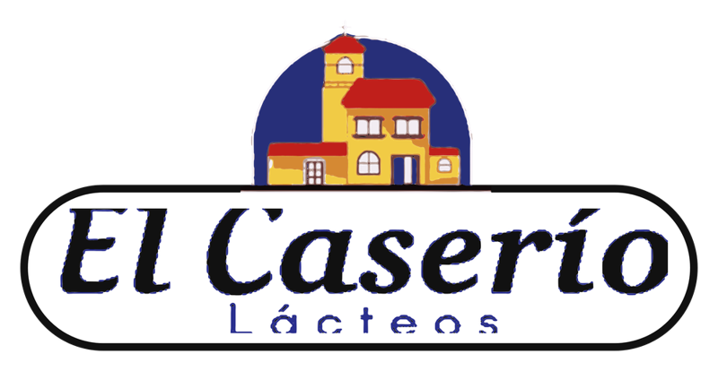
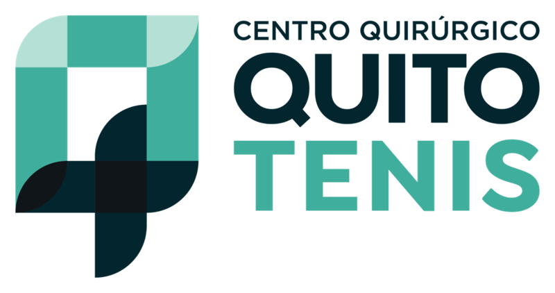
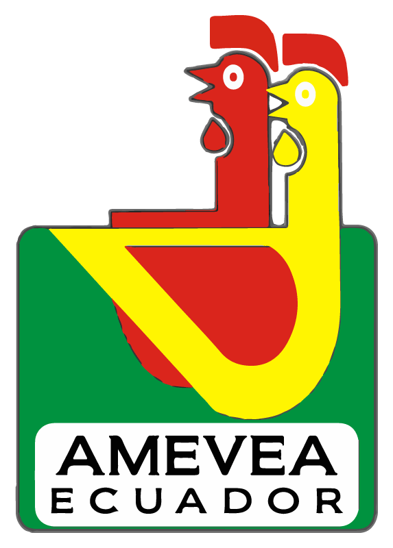
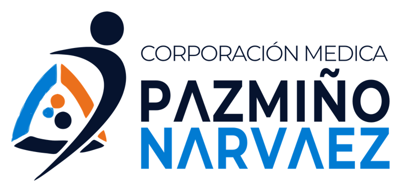
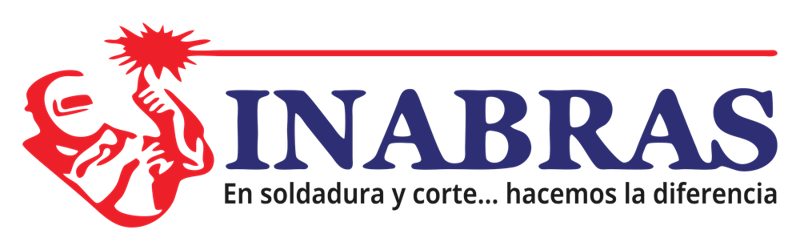
Constituer une société est le point de départ. Nous coordonnons représentation légale, domiciliation, comptabilité, recrutement et conformité pour accompagner votre activité en Équateur.
No encontramos servicios con esa búsqueda. Prueba otras palabras o cambia el filtro.
Contratos, juntas, reformas de estatutos, acuerdos entre socios y organización de grupos empresariales, con asesoría puntual o continua.
Notre accompagnement
Nous définissons avec vous le périmètre, les livrables et les honoraires avant de commencer.
Implementación de la LOPDP, delegado de protección de datos externo (DPD) y auditoría jurídica y técnica, según lo que necesite su organización.
DPD externo desde USD 95 + IVA al mes
Notre accompagnement
Nous définissons avec vous le périmètre, les livrables et les honoraires avant de commencer.
Soft landing en Ecuador: estructura societaria, constitución o sucursal, representación, domicilio y contabilidad coordinados desde Quito.
Notre accompagnement
Nous définissons avec vous le périmètre, les livrables et les honoraires avant de commencer.
Contabilidad, declaraciones al SRI, estados financieros y seguimiento de obligaciones societarias, coordinados con el criterio jurídico.
Notre accompagnement
Nous définissons avec vous le périmètre, les livrables et les honoraires avant de commencer.
Constitución de SAS con revisión de estatutos, nombramientos, RUC y configuración del facturador electrónico del SRI.
Desde USD 140 + IVA
Un accionista persona natural. Firma electrónica aparte si la necesita.
Notre accompagnement
Nous définissons avec vous le périmètre, les livrables et les honoraires avant de commencer.
Contratos de trabajo, reglamentos internos, terminaciones y gestión de controversias laborales.
Notre accompagnement
Nous définissons avec vous le périmètre, les livrables et les honoraires avant de commencer.
Registro de marcas ante el SENADI y protección de los activos que distinguen a su empresa.
Notre accompagnement
Nous définissons avec vous le périmètre, les livrables et les honoraires avant de commencer.
Análisis del caso, gestión extrajudicial, negociación y representación en controversias empresariales.
Notre accompagnement
Nous définissons avec vous le périmètre, les livrables et les honoraires avant de commencer.
Poderes, documentación y coordinación de los actos y registros que necesita su empresa.
Notre accompagnement
Nous définissons avec vous le périmètre, les livrables et les honoraires avant de commencer.
NOTRE APPROCHE DE VOTRE ACTIVITÉ
Une décision sociétaire a des effets fiscaux. La protection des données exige d’examiner les processus et les systèmes. Nous coordonnons les spécialités nécessaires à votre dossier.
Constituir una compañía es el inicio. Coordinamos representación legal, domicilio, contabilidad, contratación y cumplimiento para acompañar su operación en Ecuador.
Este acompañamiento se conoce como soft landing. El alcance se acuerda según su estructura y sus necesidades; los trámites bancarios y otras autorizaciones dependen de las entidades competentes.
Notre méthode
entreprises étrangères constituées
SectoresSalud · Educación · Tecnología · Comercio y retail · Grupos empresariales · Empresas extranjeras
Siège à Quito · Équateur
Países de origen de nuestros clientes
L’EXPÉRIENCE EN PRATIQUE
Découvrez nos missions auprès d’entreprises et d’organisations de santé. Chaque fiche décrit le contexte et le périmètre documentés.
Conseil récurrent pour un groupe de sociétés de logistique et de commerce extérieur.
Découvrir le casAccompagnement à l’implantation et à la coordination des opérations en Équateur.
Découvrir le casAccompagnement en protection des données pour un établissement de santé.
Découvrir le casMission de conseil documentée pour Asista Centros Médicos.
Découvrir le casAccompagnement documenté d’une organisation de services médicaux.
Découvrir le casChez GMA, nous avons plusieurs entreprises et une activité logistique qui ne s’arrête jamais. Nous avons besoin d’un conseil juridique qui comprenne cette réalité et ne se limite pas à la théorie.
Lire le témoignage completAfficher moins
TempoLegal nous accompagne depuis des années en droit du travail, des sociétés, des contrats et de la protection des données personnelles. Ils connaissent le fonctionnement du groupe ; lorsqu’un problème survient, nous pouvons donc aller directement à l’essentiel.
Ce que j’apprécie le plus, c’est qu’ils nous aident à prévenir les risques et nous proposent des solutions claires pour résoudre des situations concrètes. Pour un groupe comme le nôtre, disposer d’avocats qui connaissent nos activités et sont présents quand nous en avons besoin fait la différence.
Trabajar con Tempo Legal fue una decisión positiva para mi empresa y mis necesidades personales. He recibido una asesoría clara y cercana, el equipo entendió mis necesidades, me explicó los pasos del proceso y estuvo disponible para resolver mis inquietudes.
Lire le témoignage completAfficher moins
Más allá del conocimiento jurídico, valoré especialmente su compromiso y la atención personalizada durante todo el proceso. Así pudimos avanzar con seguridad y enfocarnos en nuestras obligaciones, sabiendo que los aspectos legales estaban en buenas manos. Sin duda, recomendaría a Tempo Legal. De hecho trabajo y seguiré trabajando con ellos
Chez FLP, certains sujets exigent une réponse immédiate et d’autres nécessitent un suivi pendant des mois. Pour moi, pouvoir compter sur une équipe qui connaît déjà nos entreprises fait une grande différence.
Lire le témoignage completAfficher moins
TempoLegal nous accompagne en droit du travail, des sociétés et des contrats et assure également la comptabilité de FLP Holding Ecuador. Pouvoir coordonner les aspects juridiques et comptables avec la même équipe nous facilite beaucoup le travail.
Nous n’avons pas à reprendre depuis le début l’histoire de chaque société ni à chercher un interlocuteur différent selon le problème. Nous savons à qui parler et pouvons assurer la continuité des dossiers en cours. Au quotidien dans une entreprise, cela compte énormément.
Lorsque nous avons décidé de développer nos activités en Équateur, il nous fallait bien plus que constituer une société. Il fallait organiser la structure sociétaire, la représentation locale et les aspects comptables, fiscaux et de conformité.
Lire le témoignage completAfficher moins
TempoLegal nous a accompagnés dans la structuration de nos entreprises et dans ces besoins, y compris la protection des données personnelles. Pour nous, qui coordonnons des activités dans différents pays, disposer d’une équipe locale connaissant notre activité et à laquelle nous pouvons nous adresser directement est un avantage.
En particular, hemos confiado en Juan Alberto Gómez para asumir la representación legal de compañías de nuestro grupo en Ecuador. Para mí, esa responsabilidad solo se delega cuando existe plena confianza.
Cette combinaison de conseil juridique et d’appui pratique a facilité notre activité en Équateur. C’est le type d’accompagnement que je recommanderais à d’autres entreprises souhaitant s’établir et exercer dans le pays.
En los negocios hay decisiones que no se pueden tomar a ciegas. Cuando consulto a un abogado, necesito que me explique bien cuáles son las opciones y los riesgos.
Lire le témoignage completAfficher moins
Con Juan Alberto Gómez y el equipo de TempoLegal hemos trabajado en contratos y asuntos societarios. Lo que aprecio es poder plantear un problema con confianza y recibir una opinión clara, pensada para lo que realmente necesita la empresa.
Esa relación se construye con el tiempo y con el trabajo, no con discursos. Por eso valoro contar con Juan Alberto y su equipo cuando necesito respaldo jurídico.
Testimonios de nuestros clientes.
Équipe
Découvrez les responsables des principaux domaines du cabinet. TempoLegal réunit conseil juridique, comptable et technologique.

Abogado
Socio fundador y director general
Voir le profil ↗
Abogada · Magíster en Derecho Procesal
Abogada senior
Corporativo y laboral
Voir le profil ↗
Abogada · Magíster en Cumplimiento Normativo y Protección de Datos
Abogada senior
Datos personales y compliance
Voir le profil ↗
Ingeniero · Licenciado en Contabilidad
Gerente financiero y administrativo
Voir le profil ↗
Ingeniero en Finanzas · MBA
Gerente contable y tributario
Voir le profil ↗Notre méthode
Primero entendemos la necesidad. Después definimos qué trabajo se requiere y cómo lo ejecutaremos.
Nos cuenta el contexto de su empresa. Respondemos el mismo día hábil y coordinamos la información necesaria para orientar el siguiente paso.
Nous convenons du périmètre, des livrables, des délais et des honoraires.
Nous réalisons la mission et coordonnons les informations nécessaires avec votre équipe.
Nous assurons le suivi et le soutien lorsque le service le nécessite.
DES RESSOURCES POUR MIEUX DÉCIDER
Publications sur le droit des sociétés, les entreprises étrangères et la protection des données.
Chargement des publications…
PARLONS DE VOTRE ENTREPRISE
Présentez-nous votre entreprise et le service qui vous intéresse. Notre équipe vous aidera à définir la prochaine étape.
Premier échange gratuit. Rendez-vous à Quito ou accompagnement à distance pour les entreprises équatoriennes et étrangères.
Votre prochaine étape commence ici
Échanger sur WhatsApp ↗Votre demande est préparée sur votre appareil pour être relue puis envoyée par WhatsApp ou e-mail. Aucun envoi automatique.